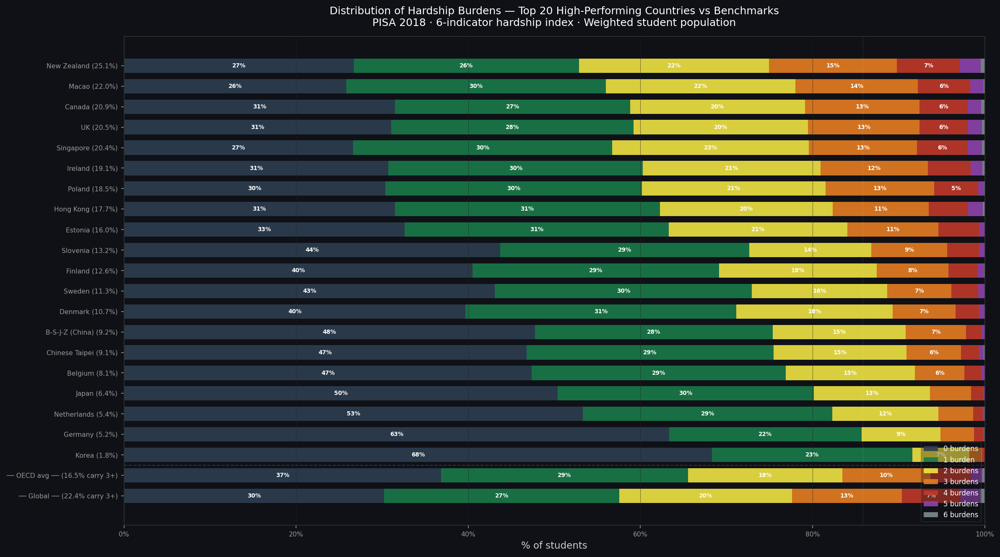
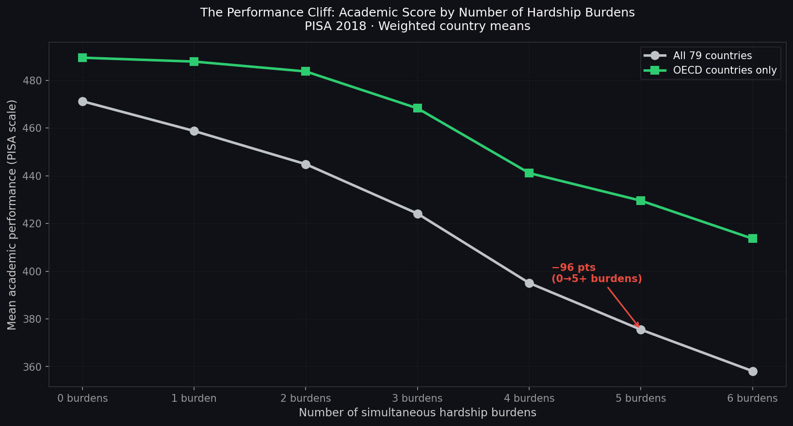
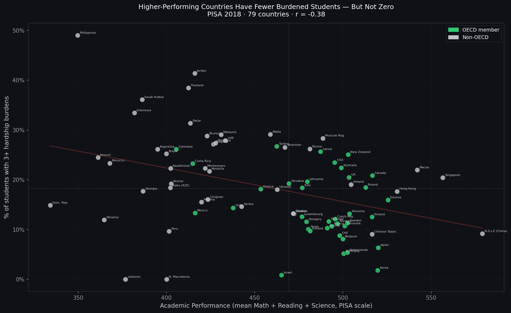
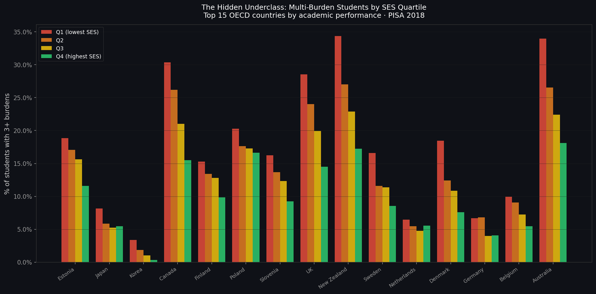
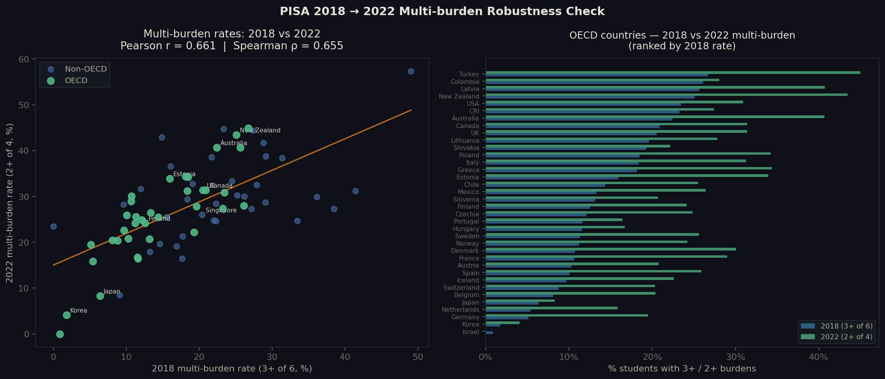

Country averages hide a stark reality: 1 in 5 students in top-performing nations carries three or more serious hardship burdens simultaneously — and their academic scores fall far behind peers who carry none. In some of the world's most admired education systems, a substantial minority of students is bullied, isolated, unable to study, and falling behind, all at once.
PISA 2018 asked students about their lives far beyond test scores. Six questions, each probing a different kind of serious burden, can be combined into a single hardship count per student. This is not a composite scale — it is a tally of how many distinct problems a student faces simultaneously.
Each indicator is coded 0 (no burden) or 1 (burden present). Students with missing data on any indicator are coded 0 — a conservative assumption that makes all rates lower bounds. The hardship count is the sum across all six (0–6). Multi-burden means carrying three or more simultaneously.
Average academic performance tells us almost nothing about the hardship distribution underneath it. Two countries can share a headline score of 520 PISA points while concealing radically different pictures of student welfare.

Korea and New Zealand both score around 515–520 PISA points — in the top ten globally. But only 1.8% of Korean students carry three or more hardship burdens simultaneously. In New Zealand, it's 25.1% — nearly 1 in 4. Japan (6.4%), Finland (12.6%), and Estonia (16%) sit between them. Canada (20.9%), the United Kingdom (20.5%), and Singapore (20.4%) are closer to New Zealand than to Korea.
| Country | Academic score | Multi-burden (3+) | Severe (4+) |
|---|---|---|---|
| Estonia | 526 | 16.0% | 5.4% |
| Japan | 520 | 6.4% | 1.6% |
| Korea | 520 | 1.8% | 0.3% |
| Canada | 517 | 20.9% | 7.6% |
| Finland | 516 | 12.6% | 4.2% |
| Poland | 513 | 18.5% | 5.9% |
| UK | 503 | 20.5% | 7.6% |
| New Zealand | 503 | 25.1% | 10.2% |
| Australia | 496 | 24.1% | 9.2% |
| Denmark | 501 | 15.4% | 5.0% |
The variation here is not a measurement artefact. It is a real difference in the proportion of students simultaneously experiencing bullying, social isolation, material disadvantage, and school disengagement. Korea's 1.8% is not a rounding issue — it reflects a qualitatively different pattern of student experience.
Academic performance does not decline smoothly as burdens accumulate. It falls off a cliff. Each additional simultaneous burden is associated with a measurable score drop — and the drop accelerates as burdens stack. Students carrying four or more burdens in OECD countries score nearly 50 PISA points below their zero-burden peers. That is roughly one full year of schooling, lost.

The steepest drop in OECD countries is between three and four burdens — a threshold effect consistent with multiple serious stressors becoming mutually compounding. Globally, students carrying all six burdens score 358 PISA points on average: below the OECD mean by more than a standard deviation, and roughly equivalent to the gap between Finland and the Dominican Republic.
This is a cross-sectional finding. The direction of causation — whether hardship causes underperformance, underperformance causes hardship, or both — cannot be established here. But the association is consistent, large in magnitude, and holds within every OECD country separately.
At the country level, higher multi-burden rates are associated with lower academic performance (r = −0.38). But the correlation is moderate and the scatter is wide — which is the point. Some countries combine high average performance with high multi-burden rates. The country average is hiding the subgroup below it.

The upper-left cluster — high performance, low multi-burden — is dominated by East Asian systems: Korea, Japan, Macao, Chinese Taipei. The upper-right cluster — high performance, high multi-burden — includes New Zealand, Canada, Australia, the United Kingdom. These countries look equally successful on average; they differ fundamentally in what proportion of their students is struggling in multiple dimensions at once.
Hardship is not evenly distributed within countries. Students from lower-SES families are substantially more likely to carry multiple burdens everywhere. But the ESCS gradient tells only part of the story. In several high-performing countries, even students in the highest socioeconomic quartile face substantial multi-burden rates.

In New Zealand and Australia, 14–18% of students in the highest socioeconomic quartile carry three or more simultaneous hardship burdens. In Canada and the United Kingdom, the Q4 multi-burden rate is 15–17%. These are not students from disadvantaged families — they are the relatively privileged, and they are still struggling in multiple dimensions simultaneously.
| Country | Q1 (lowest SES) | Q4 (highest SES) | Gap |
|---|---|---|---|
| New Zealand | 35% | 14% | 21 pp |
| Australia | 34% | 18% | 16 pp |
| Canada | 31% | 15% | 16 pp |
| UK | 29% | 17% | 12 pp |
| Denmark | 19% | 8% | 11 pp |
| Finland | 20% | 10% | 10 pp |
| Estonia | 19% | 12% | 7 pp |
| Korea | 4% | <1% | 3 pp |
In Korea, multi-burden rates are below 4% even for the lowest SES quartile. The absence of hardship stacking is not achieved at the expense of performance — Korea is among the world's top academic performers. In New Zealand, Australia, Canada, and the UK, high-performing systems coexist with substantial hardship even among the most advantaged students. The system is not fully protecting anyone.
PISA 2018 student questionnaire (SPSS_STU_QQQ.zip), loaded via
pyreadstat. 612,004 students across 79 countries. Sampling weights
(W_FSTUWT) applied to all aggregate statistics.
Six binary indicators (0/1): above-average bullying experience
(BEINGBULLIED WLE > 0), bottom-quartile school belonging
(BELONG WLE ≤ global 25th percentile, −0.67), no quiet study
space (ST011Q03TA = No), no desk at home (ST011Q01TA
= No), skipped school or classes (ST062Q01TA or
ST062Q02TA ≥ 2), and threatened at school
(ST038Q05NA ≥ 2). Missing values treated as 0 (conservative
lower-bound assumption). Sum = hardship count per student.
Composite academic score = mean of 10 plausible values across Math, Reading,
and Science per student. Country means weighted by W_FSTUWT.
PISA 500-point scale (OECD mean ≈ 500).
Paid work (FL156Q03TA): 79% missing — optional module, excluded.
Sleep problems (WB154Q07HA): 65% missing — optional module,
excluded. Life satisfaction (ST016Q01NA): 31% missing —
administered in approximately 70% of countries, excluded from main index.
Food insecurity: not directly measured in PISA 2018.
Cross-sectional design — no causal inference on the hardship–performance relationship. NaN-as-0 conservative coding may undercount burdens in countries with high item non-response. The skipping threshold (≥ 1 day in two weeks) is low and captures occasional, not chronic, absenteeism.
The core finding — that within-country hardship rates vary enormously across
top-performing systems — was replicated using PISA 2022 data on a four-indicator
index. In 2022, the ST011 questionnaire block (desk and quiet study
space) was removed entirely; the desk and quiet-space indicators have no 2022
equivalent. The four available indicators are: above-average bullying
(BULLIED WLE, available in both cycles), low school belonging, skipped
school, and threatened at school.
The country ranking of multi-burden rates is highly stable across the two cycles, especially within OECD (ρ = 0.80). Korea remains the clear outlier at the low end (1.8% in 2018, 4.1% in 2022), while New Zealand and Australia remain highest among top-performing Anglophone systems. The absolute rates are higher in 2022 because the 4-indicator index with a 2+ threshold captures more students — but the relative country ordering, which is the core claim, is preserved. The story told by 2018 data is not a single-cycle artefact.

PISA 2022 does provide a BULLIED WLE (directly comparable to
BEINGBULLIED in 2018), so that indicator is retained. What changed is
the complete removal of the ST011 question block — meaning neither the
desk nor the quiet-space indicator can be reproduced. The 2022 four-indicator index
is therefore not comparable in absolute rate to the 2018 six-indicator index, but the
country-level rank ordering is what matters for the robustness check, and it holds.
PISA 2022 student questionnaire (CY08MSP_STU_QQQ.SAV, 613,744 students,
80 countries). Four-indicator index: BULLIED WLE > 0 (available
in 2022 as a WLE), BELONG WLE ≤ 2022 global 25th percentile (−0.68),
ST062Q01TA/ST062Q02TA ≥ 2 (skipping),
ST038Q05NA ≥ 2 (threatened). The ST011 block (desk and
quiet space) was removed from the 2022 questionnaire and has no equivalent.
Multi-burden defined as count ≥ 2 of these four indicators — the same ≥50%
relative threshold as 3-of-6 in 2018. Rank correlation computed on 71 countries
present in both cycles.
Verdict: The country-level pattern of hardship concentration inside top-performing systems is confirmed across both PISA cycles. The variation between high-performing countries — between Korea and New Zealand, between Japan and Canada — is a stable feature of these education systems, not a 2018 measurement anomaly.